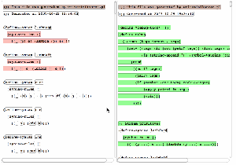

(Click on the above picture to see it in action. See the end of the post for more demos)
Motivation
I have been imagining a world where programs are not represented as text, but as data structures. They will be edited not with text editors, but with structural editors, which create and manipulate the abstract syntax trees (AST) directly. In such a programming environment, the line-by-line diff utilities and version control tools will stop working, because there are no longer "lines" or "words" in programs.
ydiff is a proof-of-concept for handling this situation. It is a diff tool designed for "structural programming".
Currently ydiff takes pains to parse program text into ASTs, but hopefully in the future programs will be stored directly as data structures so that the parsing step can be skipped. This will enable this kind of tool to extend to all programming languages effortlessly.
Features
Language-aware. ydiff parses programs, understands basic language constructs and will not make non-sensical comparisons. For example it will not compare a string "10000" with an integer 10000 even though they look very similar. Also, it tries to match functions with the same name before it attempts to destruct and compare functions of different names.
Format insensitive. The comparison result will not be affected by different number of white spaces, line breaks or indentation. For example, ydiff will not produce a large diff just because you surrounded a block of code with if (condition) {...}.
Moved code detection. ydiff can find refactored code -- renamed, moved, reordered, wrapped, lifted, combined or fragmented code. Refactored code can be detected however deep they are into the structures.
Human-friendly output. The output of ydiff is designed for human understanding. The interactive UI helps the user navigate and understand changes efficiently.
These properties make ydiff helpful for understanding changes. It may also be possibly used for detecting plagiarism in programming classes or copyright infringement of code. For large-scale use cases you may be more interested in MOSS, but ydiff is fundamentally more accurate because it parses programs.
Demos
Here are some interactive HTML demos with a pretty nice UI design. The left and right windows are always locked in their relative position. A mouse click on changed, moved or unchanged nodes will highlight the matched nodes and scroll the other window to match. After that, the windows will be locked into their new relative position for browsing.
Okay, here are the demos.
Scheme Demo1. ydiff's algorithm diffing itself (between the first version on GitHub and the latest version).
Scheme Demo 2. Comparison of the original miniKanren from Professor Dan Friendman and the version I modified in order to support condc, a "negation operator". Pay attention to the function
unify, whose major part is moved intounify-good.Emacs Lisp. Comparison of two versions (v20 and v23) of Taylor Campbell's paredit-mode, a structural editing mode of emacs for Lisp programs.
Clojure. Compare the first commit of Typed Clojure with its recent version.
Arbitrary S-expressions. Trying to find a bug in an optimizing pass of my Scheme compiler by comparing the IRs (represented as S-expressions).
Python. ydiff has a completely separate implementation in Python (named "PyDiff"), which can diff two Python programs. This is a comparison of two implementations of a small list library that I wrote, which implements Lisp-style lists. The first implementation uses recursive procedures while the second uses Python's generator syntax and is iterative. Pay some attention to
append, whose code is moved inside another functionappendAll.Javascript. Comparison between two major revisions of the UI code of ydiff itself.
C++ demo1 and C++ demo2. There are two demos for C++. The first demo compares two versions of the d8 Javascript debugger from the V8 project(v3404 from 2009 and v8424 from 2011). The second demo compares V8's simulators for two different processors (MIPS and ARM).The d8 demo is especially interesting because by clicking on the lines of the method
Shell::Initializein the old version, it can be clearly observed that its body has been distributed into several procedures in the new version:Shell::Initialize Shell::CreateGlobalTemplate Shell::RenewEvaluationContext Shell::InstallUtilityScriptAlso the major part of
Shell::Mainis moved into the helperShell::RunMain.
Get the code
ydiff is an open source project. You can follow its development on github: yinwang0/ydiff or get its source code from there.